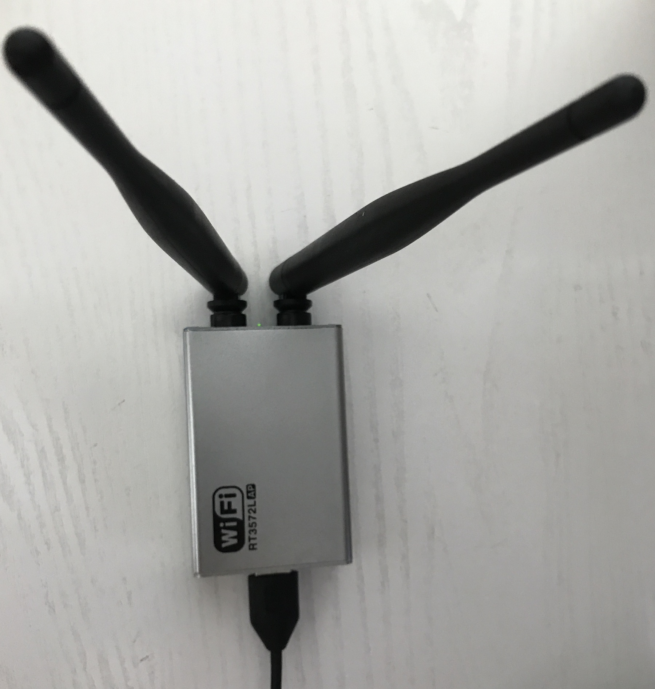

RT3572L
带双独立可拆卸天线

# ref: https://support.google.com/chrome/a/answer/6357444?hl=zh-Hans
# 设备能够扫描并连接的隐藏 SSID 网络（已储存）的数量限制
max # scan SSIDs: 4
# ref: https://stackoverflow.com/questions/22437209/the-meaning-of-the-output-from-iwlist-scan
# IE : Information Elements
max scan IEs length: 2257 bytes
# ref: https://books.google.co.jp/books?id=n9WFz7CWkhAC&pg=PA594&lpg=PA594&dq=retry+short+limit+rts+threshold&source=bl&ots=gJ93Ach5vN&sig=GbAZyghHDr8loH07s5sx3GoHm7U&hl=en&sa=X&redir_esc=y#v=onepage&q=retry%20short%20limit%20rts%20threshold&f=false
# Retry short limit 和 Retry long limit 定义了AP在（链路层）数据帧传送失败时的重试次数限制，分别对应传输的数据帧长度小于或大于RTS阈值时的最大重传次数。
# 降低这2个参数值可以降低无线节点的本地缓存空间占用率，增加这2个参数值可以提高数据传输的成功率（特别是在网络拥塞严重状况条件下）但可能会降低TCP数据的传输性能
Retry short limit: 7
Retry long limit: 4
# ref: http://trac.gateworks.com/wiki/wireless/wifi
# ref: http://www.ie.itcr.ac.cr/acotoc/Ingenieria/Lab%20TEM%20II/Antenas/Especificacion%20802%2011-2007.pdf
# 无线网卡的信号覆盖能力参数
Coverage class: 0 (up to 0m)
# ref: http://etutorials.org/Networking/802.11+security.+wi-fi+protected+access+and+802.11i/Acronyms/
# RSN: Robust Security Network
# IBSS(Ad-Hoc): Independent Basic Service Set
Device supports RSN-IBSS.
# 支持的加密算法
Supported Ciphers:
* WEP40 (00-0f-ac:1)
* WEP104 (00-0f-ac:5)
* TKIP (00-0f-ac:2)
* CCMP (00-0f-ac:4)
* 00-0f-ac:10
* GCMP (00-0f-ac:8)
* 00-0f-ac:9
# 可用天线数量
Available Antennas: TX 0 RX 0
# ref: https://wireless.wiki.kernel.org/en/users/Documentation/modes
# 支持的网卡模式
Supported interface modes:
* IBSS (Ad-Hoc)
* managed (station)
* AP
# ref: http://linuxwireless.org/en/users/Documentation/hostapd/#Dynamic_VLAN_tagging
# ref: https://blog.fem.tu-ilmenau.de/archives/1002-HowTo-enable-WiFi-roaming-with-hostapd-and-VLANs.html
# 对应常见AP管理页面提供的：“客户端隔离”功能的底层硬件技术支持
* AP/VLAN
* WDS (Wireless Distribution System)
* monitor
* mesh point (在多个无线设备之间动态建立智能的点对点通信链路）
# 工作频段（如果无线网卡支持所谓“双频”，则输出日志里应该还有一个Band 2:区段）
Band 1:
# ref: https://wireless.wiki.kernel.org/en/users/drivers/ath9k/spectral_scan
Capabilities: 0x2f2
# ref: http://rfmw.em.keysight.com/wireless/helpfiles/89600b/webhelp/subsystems/wlan-mimo/Content/mimo_80211n_overview.htm
# ref: http://support.huawei.com/enterprise/cn/knowledge/KB1000070549
# HT: High Throughput，这是802.11n开始引入的一个新的工作模式
# HT20模式的信道宽度为20MHz，HT40模式的信道带宽为40MHz。将两个相邻的20MHz信道捆绑在一起形成一个40MHz的信道，其中一个是主信道，一个是辅信道。主信道：发送beacon报文和部分数据报文；辅信道：发送其它报文。
# 在2.4GHz使用HT40模式，频段内只有一个非重叠信道，因此不建议在2.4GHz使用HT40模式。
HT20/HT40
# ref: https://www.vocal.com/networking/ieee-802-11n/
# Spatial Multiplexing (SM) Power Save: 空间分集复用节电
# 在静态SM Power Save模式中，所有的802.11n客户端只有一根天线工作。这种工作模式下，客户端就和802.11a和802.11g完全等价了。为了让AP得知客户端处于静态SM Power Save模式下，802.11n中有一个新定义的帧，客户端将这个帧发送到AP后，AP就可以知道客户端处在了静态SM Power Save模式下
Static SM Power Save
# ref: http://www.summitdata.com/blog/wi-fi-and-greenfield-mode-functionality/
# 绿灯模式是802.11n AP用于仅支持802.11n客户端通信的一种“高速”、“不向后兼容”模式。802.11n之前版本的无线数据帧均被视为噪音数据而忽略。
# 除此之外，802.11n协议还提供了另外2种工作模式：经典（Non-HT / Legacy）模式和混合（Mixed）模式。
RX Greenfield
# ref: https://www.sonicwall.com/en-us/support/knowledge-base/170504672960493
# SGI: Short guard interval，为了缩短两个数据传输间隔，用于提高效率，802.11a/b/g传输间隔是800ns，short gi将间隔缩短至400ns，可以将效率提高10%左右。
# 在多路径（multipath）环境下，后一数据帧的前端有可能比前一数据帧的末端更快到达接收机，从而导致数据帧间产生干扰。保护间隔是前后数据帧间的一段空白时间，可以为延迟信号提供更长的缓冲时间。
# 在多路径效应不明显的环境下，可以启用SGI。
RX HT20 SGI
RX HT40 SGI
# ref: https://en.wikipedia.org/wiki/Space%E2%80%93time_block_code
# STBC: Space–Time Block Coding，空时分组码，是无线通信技术中一种在不同时刻、不同天线上发射数据的多个副本，从而利用时间和空间分集以提高数据传输可靠性的编码。
TX STBC
RX STBC 2-streams

# ref: https://wlanlessonslearned.wordpress.com/tag/a-mpdu/
# ref: https://mrncciew.com/2013/04/11/a-mpdu-a-msdu/
# AMSDU / A-MSDU: Aggregate MAC Service Data Unit
# AMPDU / A-MPDU: Aggregate MAC Protocol Data Unit
Max AMSDU length: 3839 bytes
# DSSS / CCK / OFDM 对应不同的无线信号调制方式
# DSSS is used to provide support for 1 Mbps and 2 Mbps data rate.
# CCK for 5.5 and 11 Mbps while OFDM is used for higher data rate applications.
# OFDM is used in IEEE 802.11a, 11g, 11n, 11ac and 11ad versions. OFDM is employed along with MIMO to increase the data rate further.
# ref: http://www.rfwireless-world.com/Terminology/CCK-vs-DSSS-vs-OFDM.html
No DSSS/CCK HT40
# AMPDU / A-MPDU: Aggregate MAC Protocol Data Unit
Maximum RX AMPDU length 65535 bytes (exponent: 0x003)
Minimum RX AMPDU time spacing: 2 usec (0x04)
# ref: https://wireless.wiki.kernel.org/en/developers/documentation/ieee80211/802.11n
# ref: http://www.digitalairwireless.com/wireless-blog/recent/demystifying-modulation-and-coding-scheme-index-values.html
# MCS: Modulation and Coding Schemes
HT RX MCS rate indexes supported: 0-15, 32
TX unequal modulation not supported
HT TX Max spatial streams: 2
HT TX MCS rate indexes supported may differ
...
# ref: https://superuser.com/questions/809282/wifi-5ghz-ap-mode-what-does-no-ir-means-and-can-i-bypass-it
# no IR 表示在该频段上，禁用需要无线网卡主动发起通信的操作模式。
# 例如AP，IBSS等模式下主动发起的beacon请求在该频段上被禁止。
# 这是在设备厂商在生产时物理上禁止了在该频段上执行主动扫描的功能，但不影响被动扫描能力。
* 5700 MHz [140] (20.0 dBm) (no IR, radar detection)
# ref: http://wifi-insider.com/wlan/dfs.htm
# DFS: Dynamic Frequency Selection，用于避免无线信号干扰的动态频率选择机制
DFS state: usable (for 264 sec)
# ref: https://wireless.wiki.kernel.org/en/developers/dfs
# CAC: Channel Availability Check
DFS CAC time: 60000 ms
* 5745 MHz [149] (20.0 dBm) (no IR)
...
# ref: http://linuxwireless.org/en/users/Documentation/iw/
# ref: man iw
Supported commands:
* new_interface
* set_interface
* new_key
* start_ap
* new_station
* new_mpath
* set_mesh_config
* set_bss
* authenticate
* associate
* deauthenticate
* disassociate
* join_ibss
* join_mesh
* set_tx_bitrate_mask
* frame
* frame_wait_cancel
* set_wiphy_netns
* set_channel
* set_wds_peer
* probe_client
* set_noack_map
* register_beacons
* start_p2p_device
* set_mcast_rate
* Unknown command (104)
* connect
* disconnect
Supported TX frame types:
* IBSS: 0x00 0x10 0x20 0x30 0x40 0x50 0x60 0x70 0x80 0x90 0xa0 0xb0 0xc0 0xd0 0xe0 0xf0
* managed: 0x00 0x10 0x20 0x30 0x40 0x50 0x60 0x70 0x80 0x90 0xa0 0xb0 0xc0 0xd0 0xe0 0xf0
* AP: 0x00 0x10 0x20 0x30 0x40 0x50 0x60 0x70 0x80 0x90 0xa0 0xb0 0xc0 0xd0 0xe0 0xf0
* AP/VLAN: 0x00 0x10 0x20 0x30 0x40 0x50 0x60 0x70 0x80 0x90 0xa0 0xb0 0xc0 0xd0 0xe0 0xf0
* mesh point: 0x00 0x10 0x20 0x30 0x40 0x50 0x60 0x70 0x80 0x90 0xa0 0xb0 0xc0 0xd0 0xe0 0xf0
* P2P-client: 0x00 0x10 0x20 0x30 0x40 0x50 0x60 0x70 0x80 0x90 0xa0 0xb0 0xc0 0xd0 0xe0 0xf0
* P2P-GO: 0x00 0x10 0x20 0x30 0x40 0x50 0x60 0x70 0x80 0x90 0xa0 0xb0 0xc0 0xd0 0xe0 0xf0
* P2P-device: 0x00 0x10 0x20 0x30 0x40 0x50 0x60 0x70 0x80 0x90 0xa0 0xb0 0xc0 0xd0 0xe0 0xf0
Supported RX frame types:
* IBSS: 0x40 0xb0 0xc0 0xd0
* managed: 0x40 0xd0
* AP: 0x00 0x20 0x40 0xa0 0xb0 0xc0 0xd0
* AP/VLAN: 0x00 0x20 0x40 0xa0 0xb0 0xc0 0xd0
* mesh point: 0xb0 0xc0 0xd0
* P2P-client: 0x40 0xd0
* P2P-GO: 0x00 0x20 0x40 0xa0 0xb0 0xc0 0xd0
* P2P-device: 0x40 0xd0
software interface modes (can always be added):
* AP/VLAN
* monitor
# ref: https://wiki.archlinux.org/index.php/software_access_point
# 软件热点的创建和系统的网络连接方式(以太网,无线网) 是独立的。许多无线设备甚至支持并存操作, 同时作为热点和为无线客户端。通过这个功能可以为现有网络创建一个软件热点，作为无线中继器
# 约束#channels <= 1说明软件热点必须和 Wi-fi 客户端连接处于同一信道
# TL-WN722N之所以被称为无线嗅探神器，其中一个原因就是该网卡支持同时工作为无线客户端和Soft AP
# 以下参数中的 total <= 8说明该无线网卡支持同时模拟8个独立的SSID
# 通过添加虚拟网卡，可以实现一块物理网卡，同时工作在AP模式和监听模式（不同的虚拟网卡来承载不同模式）
# iw dev <wireless_interface_name> interface add <newly_created_virtual_interface_name> type [monitor | managed | ap]
valid interface combinations:
* #{ AP, mesh point } <= 8,
total <= 8, #channels <= 1
HT Capability overrides:
* MCS: ff ff ff ff ff ff ff ff ff ff
* maximum A-MSDU length
* supported channel width
* short GI for 40 MHz
* max A-MPDU length exponent
* min MPDU start spacing
Device supports TX status socket option.
Device supports HT-IBSS.
Device supports SAE with AUTHENTICATE command
Device supports low priority scan.
Device supports scan flush.
# 当无线网卡工作在AP模式时，需要使用iw dev <wireless_interface_name> scan ap-force
# 当无线网卡工作在managed模式时，直接使用iw dev <wireless_interface_name> scan
Device supports AP scan.
Device supports per-vif TX power setting
Driver supports full state transitions for AP/GO clients
Driver supports a userspace MPM